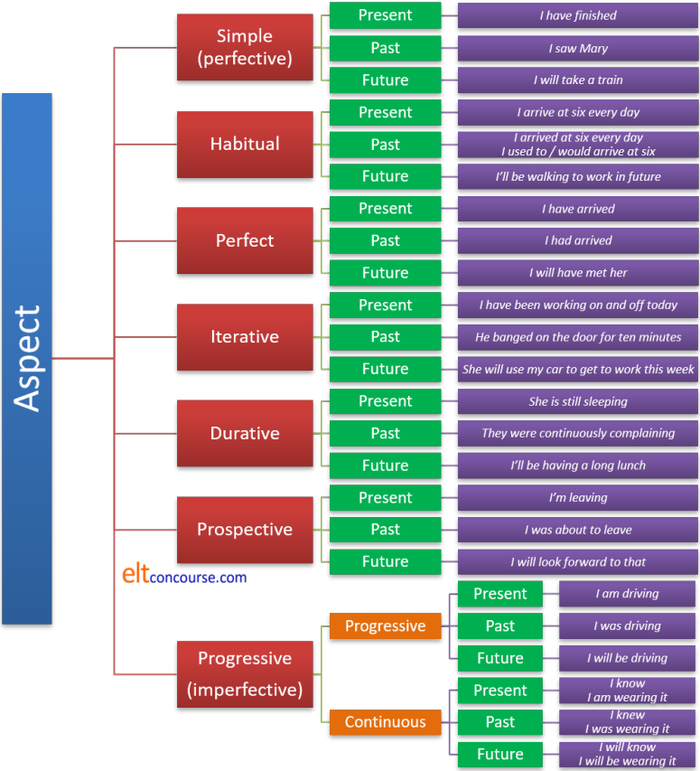

Aspect

There is a basic guide to tense and aspect in the initial plus section of the site (new tab). If you aren't quite sure how aspect and tense are different, do that guide first. It's quite short.
Aspect refers not to the time itself but to how the event or state is perceived.
 |
Types of aspect in English and other languages |
Because English language teachers are only concerned with the aspect
structure of one language, we tend to over-simplify the area. In
fact, there are lots of different aspects in languages.
English has a
range but uses only a few ways to distinguish between them.
Worse, there is no one-to-one equivalence between form and aspect in
English (or most other languages for that matter).
For example, take the following sentences:
- I know.
- I have eaten.
- I walked to school as a child.
- I used to play football.
- He is still eating.
- I broke the window.
- I was playing football.
- Fish swim.
- It's going to rain.
- I dreamed all night.
- He called the help line every hour all day.
- He was banging on the door for hours.
All these sentences can be referred to as different aspects of the verb. Traditional English grammars, especially those written for learners, will only identify three aspects in these 10 sentences. These three are:
- Progressive or continuous aspect, e.g.,
He was living in London - Perfect, e.g.,
I have eaten - Simple, e.g.,
I broke the window
There is, even in English, a distinction between continuous and progressive aspects, in fact, although the verb form often remains the same.
In
reality, there are more than that and in many languages they would be
distinguished grammatically using distinct verb forms, particles or
auxiliary constructions.
One at a time:
| 1 | I know. | This looks like a simple present tense
but in fact, it's in the continuous
aspect because it describes a current state of affairs, not an
event or action. In that respect, it is in the same aspect
as She is wearing a hat. In some analyses, this example would be called stative because it refers to a state rather than an event or action. |
| 2 | I have eaten. | Most people will spot this as the perfect aspect in English and that is what it is. It draws attention to the fact that the eating has a present relevance in some way. Indeed, the reason this is called a present perfect form is that the state applies to the present, not the past. It is the past embedded in and changing the present. Perfect aspect forms are always relative, showing the connection between two times. |
| 3 | I walked to school as a child. | Both of these can be
referred to as the habitual
aspect and we can add something like I would read for hours as a child in the same category. Both of these can be referred to as imperfect (see below). These are also examples of iterative senses because the action was clearly repeated. However, that need not be the case because, e.g.: I used to have a full head of dark hair but now it's all grey and thin is habitual in aspect but not iterative because it refers to a state, not an action. The form with would is usually iterative but used to can be either iterative of continuous as well as habitual. |
| 4 | I used to play football. | |
| 5 | He is still eating. | In some languages, this, the
continuative aspect, is
distinguished by having its own form. In English, which
does not have a dedicated form it is generally referred to as a
durative aspect (see below). In English we often also mark
this with adverbials such as still, yet, continuously,
constantly, incessantly etc. The durative aspect may not always be signalled by the auxiliary be because semantically some verbs imply durative events and actions. For example: I dreamed all night long is clearly a durative aspect but the verb is simple in form because of the meaning of dream. |
| 6 | I broke the window. | This is usually, in English, called the
simple aspect and also
perfective (not to be confused with perfect, see below). It refers to an event viewed in its
entirety. The event is not relative to any other and is seen as completed (i.e., perfective). |
| 7 | I was playing football. | This, on the other hand is an
imperfect, i.e., ongoing or
repeated. It is also, in English, referred to as the
progressive. In, e.g.: The child was throwing stones at the seagulls we have an example of an imperfect from with an iterative aspect. It is called imperfect because it has not obvious start and end point. |
| 8 | Fish swim. | English uses the present tense for this
but some languages have a tense form for
generic aspect. This is
also called a gnostic aspect because it relates to knowledge of
the world. Most frequently, this aspect in English is signalled by the present simple tense form but that is not a universal rule. |
| 9 | It's going to rain. | This and other structures such as
It's about to rain can be called the
prospective aspect,
referring to something imminent. When the future does not
turn out as predicted as in, e.g. I was about to go out when he arrived it may be called a defective aspect. |
| 10 | He called the helpline every hour all day. | In English, these similar
concepts may be expressed in the simple form (sentence 10) or in
the progressive form (sentence 11). However, it's clear that the actions are not continuous in the sense expressed in sentence 7, but repeated short, instantaneous events. They are continual, not continuous. The term for this is iterative and some languages will have a different verb form to express this notion. English also uses adverbials to signal the repeated nature of the event such as for hours and hours, while the band played, again and again etc. and it also reserves the form for what are known as momentary verbs such as bang, ring, click etc. A good deal depends on the meaning of the verb in the selection of this aspect. Some verbs, such as hit, bang, break, start etc. may be referred to as instantaneous but others such as continue, persist, call, speak etc. have meanings which signal a longer lasting event. In the second set of verbs, the same form signals not an iterative aspect but a durative (i.e., long-lasting aspect). In English it is rarely necessary and sometimes plain wrong to select a progressive verb form with durative meanings (sentence 10. is an example and sentence 11. could be rephrased as: He banged on the door for hours with no loss of meaning). |
| 11 | He was banging on the door for hours. |
That's not the end of the story and there are probably as many different aspects again as are listed here. The point to understand is that which aspects we analyse and consider significant will depend on the structure of the language we are considering.
In summary, we may identify eight aspects which can be signalled
either by tense forms or by adverbials (or both) in English.
Here's a
summary:
English, as we saw above, distinguishes in the form of the verb, the use of auxiliaries and adverbials to show perfect, continuous, habitual, prospective, iterative, durative, progressive and simple aspects. However, there are many types of aspect which can be distinguished purely by verb forms in other languages.
It is also clear from the examples above that, with the exception of perfect and progressive aspects, there is no one-to-one relationship in English between verb form and aspect. This can confuse learners whose languages are stricter in this regard, although many languages exhibit the same kind of inconsistent marking and much is often left for the reader / hearer to infer from context.
For example:
- The habitual aspect

- In a sentence such as
I worked hard when I was at university
the verb is a simple past form but the hearer can infer:
a) that the speaker is no longer at university
b) that the speaker habitually worked hard
so the use of a form such as would or used to is not necessary. The habitual aspect is signalled by co-textual and contextual clues.
Of course we can, via the use of a central or semi-modal auxiliary verb, deliberately signal habitual aspects as in, e.g.:
I used to work hard
I would arrive early every morning
etc.
Equally, English has no way to express a current habit by marking the verb form so present routines and habits are expressed in the present simple. For example:
I take the 09:15 train
refers to a present habit.
It is rare, in any language to express the concept of a future habit not yet begun but the resources are available to do so, so we can find, for example:
I'll be taking the kids to school from now on
I'll arrive early at work in future
When we want to signal this rather unusual sense, we use adverbials (e.g., from now on, in future, for the foreseeable etc.) to disambiguate the meaning from the usual sense of these future forms. - The perfect aspect

- The perfect aspect is always signalled in British English with the use
of a form of have. AmE usage, on the other hand, often uses the
simple form and requires the reader / hearer to make the connection
between relative events. So, for example, BrE will prefer
Has he left?
to embed a possible past event in the present, but AmE often prefers:
Did he leave?
for the same notion.
However, the situation is not so clear with the use of the past perfect aspect and, providing the ordering of events is clear, neither variety will use a perfect form of the tense so we can have either:
I lost my wallet and had to walk home
or
I had lost my wallet and had to walk home
But, when the speaker wishes to signal causality or the ordering of events is not otherwise clear, the perfect form will often be preferred so we have, e.g.:
I had lost my wallet so had to walk home
and
I had lost my wallet and walked home
and in both those examples we have a relative or relational tense form which serves to embed the past within the past.
We can also embed the past in the future by using the future perfect forms and have, e.g.:
I will have finished before you arrive
which embeds a past (finishing) in the future (arriving). - The progressive aspect

- In English, the progressive is usually signalled by the use of be and the -ing participle as
in:
She is working in the garden so won't be in for lunch
but the same form is also used to signal a prospective aspect as in, for example:
She is doing the driving tomorrow
which is progressive but calling it the present continuous for the future is misleading. It shares the form, not the notion.
The issue is that, confusingly for some, English uses the same -ing structure for multiple ideas (including, incidentally, verbal nouns and gerunds).
The continuous, on the other hand, is often expressed using a simple aspect as in, e.g.:
She believes in ghosts
She likes Mozart
She works in London
which are continuous but not progressive in any sense. For more, see the guide to stative and dynamic verb uses linked in the list of related guides at the end.
Progressive aspects are signalled in other tenses, too, in parallel ways so we get, e.g.:
They were watching television
She will be playing the trumpet
My mother always liked Beethoven's music
I'll enjoy being on holiday
etc. - The continuous aspect

- English can use both the simple and the progressive form of
tenses to signal that an event or state is continuous (rather than
progressive) and this often denotes a background relative to another
action. For example:
The professor over there is writing another book
probably does not refer to what the professor is currently doing but refers to a background event.
We can also have, for example:
The engine makes a lot of noise
which does not refer to the present but to a background event that has caused the owner to take it to a mechanic. If we want to suggest that the event is progressive rather than a continuous background state, the form would usually be:
The engine is making a lot of noise
but that, too, can be interpreted as a background event causing the visit to the mechanic.
As with progressive aspects, we can embed the notion of the continuous in the past and the future. For example:
The professor was writing a book that year
The engine made a lot of noise when it got older
When we use the simple form of the verb but intend a continuous sense to be understood, we frequently employ adverbials (that year and when it got older in these examples).
It is also worth repeating that semantic issues play a significant role with verbs such as walk, read, study, continue and so on signalling a longer-lasting event and may be called durative than verbs such as hit, drop, break, switch etc. which may be described as instantaneous acts and are rarely used in continuous senses. If the progressive form of the verb is used with these verbs, the sense is iterative (repeated) as in, e.g.:
They were breaking plates at the wedding
which, because of the nature of the verb, can only mean that the action was repeated. - The prospective aspect

- English uses a variety of forms to refer to a prospective event
seen from the standpoint of now. This is the reason it is
sometimes averred that English has no future tense at all. It
is true that English cannot alter the inflexion on a verb to signal
futurity as, for example, is possible in French, Spanish and a
number of other languages. However, the will + bare infinitive
form certainly does act as a future tense for all intents and
purposes in expressions such as:
She will be 35 tomorrow
In this sense, the verb will is acting as a primary auxiliary verb in the same way that the verbs be and have act to form a progressive and perfect aspect structure respectively.
The issue becomes blurred because the modal auxiliary verb will performs a variety of other functions in English that have little to do with the future per se and refer to present willingness (dynamic modality, to be more precise) so, for example:
Will you marry me?
or
Will you have another drink?
are not asking for speculation about the future in the same sense as, e.g.:
Will it rain, do you think?
but refer, instead to current willingness.
This verb and its past form, would, causes a good deal of trouble for learners unless its polysemous nature is clearly explained. - The iterative aspect

- Some languages reserve a particular tense form or set of
inflexions to express repeated events or actions. English
usually uses a perfect and/or a progressive form to do the same
thing. For example:
The bells are ringing
Someone has been stealing my apples
They have had problems
She is travelling a lot these days
etc.
all of which express the sense of repetitive events rather than being perfect or progressive aspects especially when an instantaneous verb such as ring (the example above) is used.
See below for consideration of the durative aspect in English.
Other languages, it bears repeating, do things differently.
Moral 1: the aspects of verbs that we choose to analyse and teach in
English are simply those which are marked in English. In
other languages, other aspects are more important and will be analysed
and taught differently.
Moral 2: the aspects we focus on in English are not
universals. Languages differ dramatically in how they represent
the nature of events.
Examples may help.
- Italian (and some other Romance languages)
- distinguishes actions which are recent, remote and perfect or
imperfect. The language does not, however, distinguish between
I was walking
and
I usually walked. - German (and some other Germanic languages)
- does not distinguish between
I have eaten
and
I ate
nor, in non-dialect standard, between
I write
and
I am writing.
It is arguable that German does not exhibit aspect at all except through the addition of other markers such as adverbs and time expressions. - Cantonese, and other Chinese languages
- has particles which may be added after the verb, one to
signal the progressive aspect
She is putting on her sandals
and one the continuous (state) aspect
She is wearing sandals
English cannot distinguish grammatically between these two aspects but relies on adverbials of time to make the difference.
For more on other languages and the variety of aspects which may be signalled grammatical in them, go to the guide to teaching tense and aspect (linked below).
 |
Perfective, imperfective and perfectShe ran (perfectly)He's still running (imperfectly) ELT is littered with terms which look almost the same but mean very different things. This is one of those cases. |
- perfective
- is the term used to indicate that an event or state is
completed. For example,
I went to Margate last Thursday
is a perfective form which may or may not have present relevance but is clearly finished.
Napoleon died in 1821
is another example of a perfective form in English. - imperfective
- is the term which indicates that an event is not completed.
Examples are:
She is playing tennis with John
They were sitting in the garden
and
I have lived here all my life
In no case is the event perceived as finished. - perfect
- is the term used to signify an imperfective or perfective which
has a certain tense structure and which functions to embed one event
in another time.
For example,
I have been to America
is a perfective (the act of going to America has been completed) but is a perfect tense indicating a present relevance of some sort.
I have lived here all my life
is unfinished and imperfective (but still a perfect form) because it also signifies present relevance. In this case that the state is probably (not certainly) current and the past is embedded in the present to make it clear that there are current consequences, for example, that I am something of an expert on the area or am happy to remain here.
The durative in EnglishThe sands of time ran slowly |
It is quite arguable that English also has, in particular, a durative
aspect which is often realised in different ways grammatically.
For example,
- He would keep asking
- I spent the evening trying to stay awake
- I was watching television when he called
- He will be working now
- She gave a very long presentation
- I slowly understood what the problem was
are all examples of English using a variety of forms to express the aspect, sometimes by changing the tense form, sometimes by using a modal auxiliary verb, sometimes a lexical or main verb and sometimes by using adverbials. For learners with some language backgrounds, that's easier to grasp than the usual focus on the progressive aspect (i.e., signalled by the -ing ending but not in certain senses of certain verbs).
Durative vs. terminative / instantaneous
In some languages (notably Russian) a distinction is made in the
form of the verb between those which are terminative and those which
are durative. English makes no such distinction in form but
the concepts account for some of the stative / dynamic, perfective /
imperfective and progressive / simple tense forms that can be used.
Briefly:
- Terminative verbs suggest either of two closely related
ideas
- a change of state, for example
She peeled the potatoes
They opened the box
I sat down - an action which cannot continue (instantaneous), for example
The glass broke
I wished her good morning
They finished the story
- a change of state, for example
- Durative verbs imply no such condition, for example
She sang at the party
I read the paper
I was working in the office
are all semantically confined to actions which have a greater duration.
When terminative verbs which imply a change of state are used in
progressive forms, they can be made durative so, for example, we can
distinguish the sentences above as:
She was peeling the potatoes
They were opening the box
I was sitting down
Instantaneous verbs which imply that an action cannot progress are
less often used in this way and cannot usually be made durative so
we do not usually encounter:
The glass was breaking
I was wishing her good morning
They were finishing the story
I was glancing at the clock
Durative verbs are commonly used in both the simple and progressive
forms to imply continuous or progressive states. For example:
I lived in London at that time
(continuous)
She stayed in a guest house on holiday (continuous)
They were studying at university then (progressive
or continuous, i.e., an action or a background
state)
He was running in the park (progressive)
Summary
A way of visualising the aspect structure of English is like this, bearing in mind that many analyses do not distinguish between continuous and progressive aspects because the form is, in English, often the same.

There are advantages to seeing the English aspect system like this:
- It helps to clear up the stative / dynamic verb use problem by
positing both a continuous and a progressive aspect. This will be
intuitively comprehensible to learners from many language
backgrounds. It explains, e.g., the concept of
I wore a blue shirt yesterday
as a simple past form being used to express the continuous aspect. It also explains the difference between, e.g.,
It costs a lot (continuous aspect)
and
It is costing a lot (progressive aspect). - It shows how form and function may not be one-to-one equivalents and gets away from the assumption that, e.g., the -ing form is all we use for progressive and continuous aspects.
- It makes it clear that the so-called present perfect is a present aspect (not a past tense as the form is in many languages).
- It puts the past perfect in its place (which is not something that always occurs before the past).
- It makes perfective and imperfective forms clear.
Combining aspects |
English happens to be quite adept at combining aspects. Other languages do this, of course, but not usually to the same extent. For example:
- I have told you again and again not to do that: perfect and iterative
- I have been running: perfect and durative / progressive
- They will have worn the same coat: perfect and continuous
- I had, as usual, arrived early: perfect and habitual
- She is going to have to take the train while the car's in the garage: prospective and iterative
- People had been forgetting to sign in at the door: perfect and iterative
- She used to be very fond of comic novels: habitual and continuous
- As a child I would steal apples from the neighbour's garden: habitual and iterative
- Was she always so argumentative?: habitual and durative
| Related guides | |
| a basic guide to tense and aspect | for a much simpler guide in the initial plus sections of the site |
| stative and dynamic uses | for the part of the guide to verb types and clause structures which has more on verbs used in these ways and the role of aspect |
| teaching tense and aspect | for more on how other languages handle this area and the problems that arise when teaching it |
| primary auxiliary verbs | for more on how verbs like these function to make tenses and signal aspects |
| tense and aspect | for a link to four guides to tenses and aspects |
| complex tense forms | for a guide to how aspect and modality may be combined |